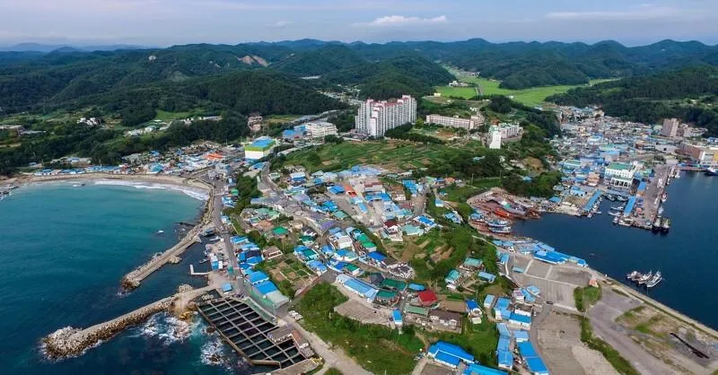
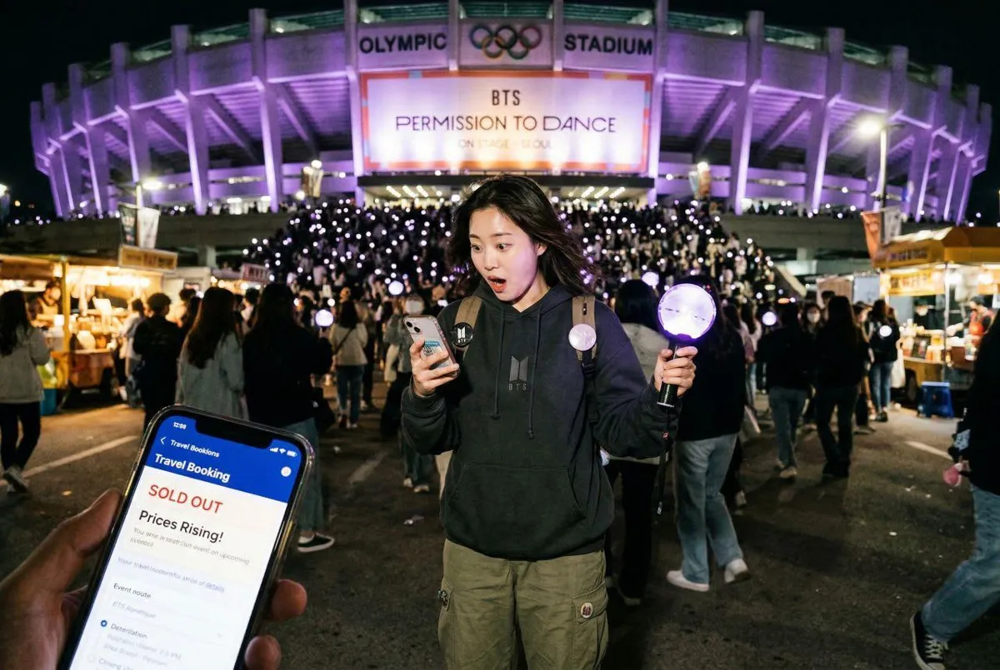
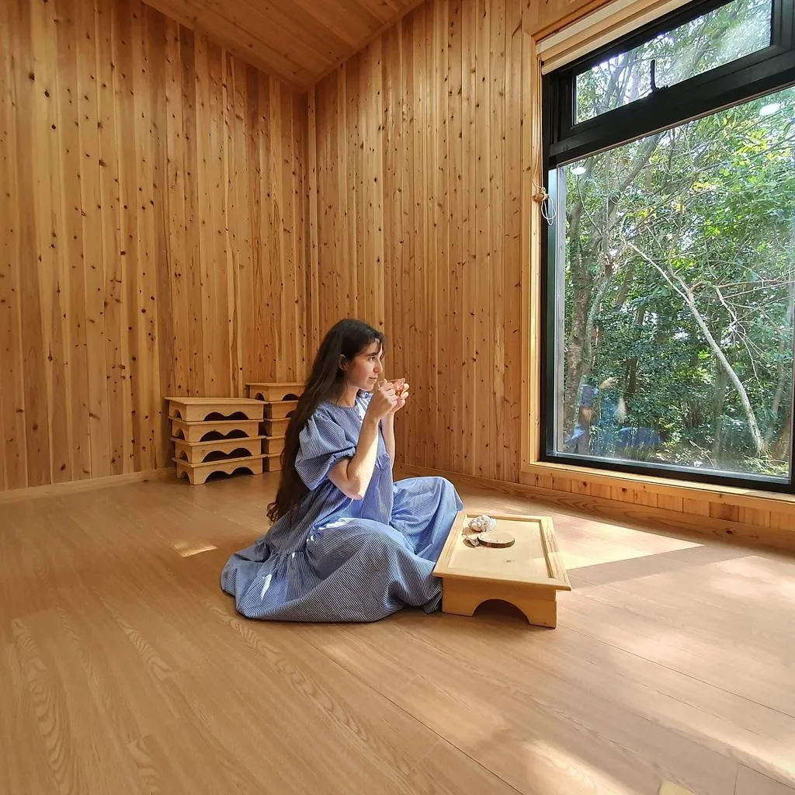
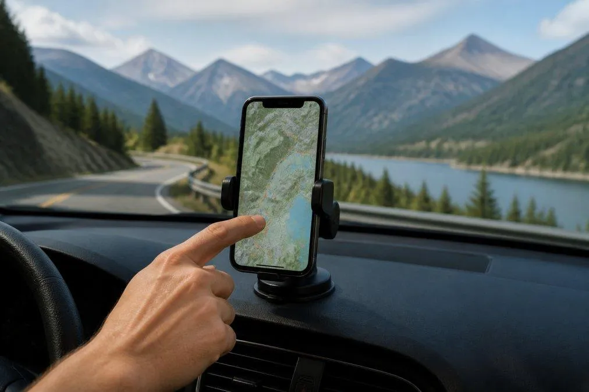
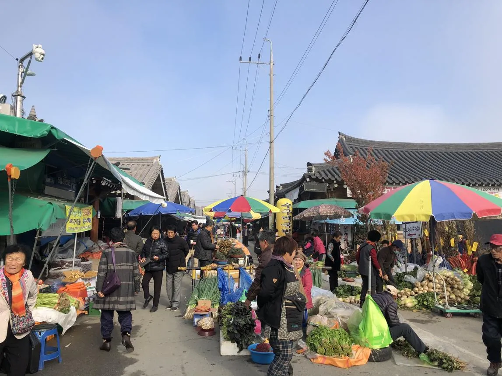
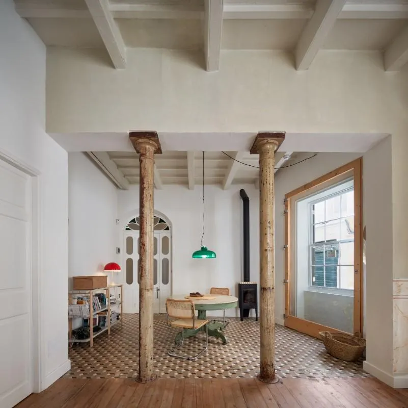
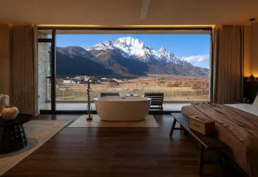

2026 관광 트렌드, 한눈에 읽기
국내외 관광 트렌드 중 학생들이 이해하고, 새로운 관광상품으로 연결하기 좋은 8개 키워드를 선정했습니다.
| No. | 트렌드 / 영어 원어 | 핵심 개념 | 소개 기관 | 학습 키워드 |
|---|---|---|---|---|
| 01 | 셋제팅Set-Jetting | 영화·드라마 촬영지 방문 | Expedia Group | 콘텐츠 IP와 지역 관광 |
| 02 | 팬 보이지Fan Voyage | 좋아하는 대상을 따라 떠나는 덕질 여행 | Expedia Group | 팬덤 기반 고객 세분화 |
| 03 | 허시드 하비스Hushed Hobbies | 조용한 취미·휴식 중심 여행 | Booking.com | 웰니스 경험과 감성 가치 |
| 04 | AI 로드트립Roadtrip Rewired | AI가 돕는 개인 맞춤형 여행 설계 | Booking.com | 개인화 서비스와 AI 신뢰 |
| 05 | 네오 로컬리즘Neo-localism | 지역만의 문화·생활을 관광 경험으로 | 한국문화관광연구원 | 로컬 콘텐츠와 지역상권 |
| 06 | 샐비지드 스테이스Salvaged Stays | 기존 건축물을 활용한 특별한 숙박 | Expedia Group | 공간 활용과 사업성 |
| 07 | 데스티네이션 체크인Destination Check-in | 숙박시설 자체가 여행의 목적지 | Skyscanner | 호텔 경험과 체류 가치 |
| 08 | 다세대 관광Multi-Generation Travel | 여러 세대가 함께 떠나는 여행 | 한국관광공사·Hilton | 복합 고객 니즈와 상품 설계 |
2026 관광 트렌드 전망(국내)
국내 주요 기관 및 기업의 트렌드 전망을 종합한 결과, 2026년 관광 시장은 AI 기반 서비스 확산, 개인화된 가치 소비, 로컬 및 지속가능 관광의 진화, 경험 중심의 여행이 핵심 동인으로 작용할 전망으로 분석됨.
| 발행기관 | 한국관광공사 | 김난도 교수(서울대) | 놀(NOL) 유니버스 | 하나투어 | 한국문화관광연구원 |
|---|---|---|---|---|---|
| 자료명 | 2026 관광 트렌드 전망 | 트렌드 코리아 2026 | 2026 여가 트렌드 리포트 | 2026 여행 트렌드 | 2030 관광 트렌드 전망 |
| 주제 | D.U.A.L.I.S.M. | H.O.R.S.E. P.O.W.E.R. | H.O.R.S.E. | M.O.M.E.N.T.U.M. | 2030 관광 트렌드 아키텍처 |
| 키워드 |
|
|
|
|
|
2026 관광 트렌드 키워드(국외)
해외 관광기업 5개사의 2026년 관광 트렌드 키워드 전체
| 발행기관 | Expedia Group (익스피디아 그룹) | Booking.com (부킹닷컴) | Skyscanner (스카이스캐너) | Hilton (힐튼) | Marriott Bonvoy (메리어트 본보이) |
|---|---|---|---|---|---|
| 자료명 | Unpack ’26 | Travel Predictions 2026 | Travel Trends 2026 | 2026 Trends Report | 2026 Travel Trends |
| 주제 | Unpack ’26 | The Era of YOU | Horizons 2026: Beyond Escape | The Rise of the Whycation | Ticket to Travel 2026 |
| 키워드 |
|
|
|
|
|
셋제팅
01 / 08
사진 열기 ↗영화·드라마 속 장소를 실제로 찾아가며 영상 속 장면과 감정을 경험하는 여행
드라마 촬영지 방문 + 등장인물의 장면 체험 + 주변 카페 투어
관광객이 여행지를 먼저 선택하기보다, 좋아하는 콘텐츠를 통해 여행지를 발견할 수 있습니다.
“드라마 인기가 사라져도 관광객이 계속 방문하게 하려면?”
팬 보이지
02 / 08
사진 열기 ↗좋아하는 가수·캐릭터·스포츠팀 등 자신의 팬덤 관심사를 중심으로 계획하는 여행
K-pop 공연 + 팬덤 굿즈 + 지역 숙박을 결합한 패키지
여행 동기가 관광지 자체가 아니라 팬으로서의 소속감과 특별한 경험에서 출발합니다.
“팬덤 관광은 일반 패키지여행과 무엇이 다를까?”
허시드 하비스
03 / 08
사진 열기 ↗북적이는 관광 대신, 조용한 취미 활동과 자신만의 시간을 즐기는 여행
숲속 필사 여행 + 명상 + 차 마시기 + 디지털 디톡스
많이 보거나 바쁘게 이동하는 것보다 차분한 활동과 정서적 만족 자체가 관광 가치가 될 수 있습니다.
“조용한 시간을 보내는 여행을 어떻게 유료 관광상품으로 만들 수 있을까?”
AI 로드트립
04 / 08
사진 열기 ↗AI와 디지털 도구를 이용해 개인의 취향과 상황에 맞게 여행 동선과 일정을 설계하는 방식
날씨 + 예산 + 선호 음식 + 이동 수단을 반영한 AI 여행 일정 추천
일정 작성이 쉬워지지만, 추천 결과의 정확성·현지성·신뢰성이 관광 경험을 좌우합니다.
“AI가 만든 여행 일정과 사람이 만든 일정 중 어느 쪽을 더 신뢰할까?”
네오 로컬리즘
05 / 08
사진 열기 ↗지역의 고유한 문화·생활방식·자원을 새로운 시각으로 발견하고 관광 경험으로 연결하는 흐름
지역 주민과 함께하는 재래시장 투어 + 마을 음식 체험
유명 관광지 외에도 지역의 일상, 사람, 문화가 관광 콘텐츠이자 지역경제의 자원이 됩니다.
“평범한 지역의 일상생활도 관광자원이 될 수 있을까?”
샐비지드 스테이스
06 / 08
사진 열기 ↗기존 건축물의 가치와 이야기를 살려 숙박 경험으로 새롭게 활용하는 관광 방식
폐교·옛 창고·노후 주택을 개조한 체류형 숙소
건축물의 고유한 역사와 공간 경험이 차별화 요소가 되고, 유휴 자산을 관광에 활용할 가능성을 보여줍니다.
“오래된 건물을 철거하거나 관광공간으로 활용하는 결정을 무엇을 기준으로 내려야 할까?”
데스티네이션 체크인
07 / 08
사진 열기 ↗방문해야 할 관광명소보다 숙박시설에서 보내는 시간과 경험이 여행의 핵심 목적이 되는 형태
멋진 전망의 호텔 + 건축이 독특한 리조트 + 체류형 호캉스
숙박이 이동을 위한 부대서비스를 넘어 독립적인 관광상품으로 평가됩니다.
“호텔 밖으로 거의 나가지 않는 여행도 관광이라고 할 수 있을까?”
다세대 관광
08 / 08조부모·부모·자녀 등 여러 세대가 함께 여행하면서 서로 다른 여행 욕구를 조율하는 방식
조부모 휴식 + 부모 웰니스 + 자녀 체험 프로그램을 하나의 일정으로 구성
같은 여행상품이라도 연령과 관심사에 따라 기대하는 가치가 다르므로 세대별 서비스 설계가 중요합니다.
“세대별 여행 선호가 다를 때 어떻게 하나의 상품으로 구성할까?”
관광 트렌드에서 창업 아이디어로
같은 트렌드라도 누가, 왜, 무엇에 돈을 내는가에 따라 관광벤처 모델이 달라집니다.
| No. | 관광상품 아이디어 | 연계 트렌드 | 학생들이 고민할 사업 요소 |
|---|---|---|---|
| 01 | K-pop 덕질 여행 패스 | Fan Voyage | 고객 세분화, 팬덤 마케팅 |
| 02 | 조용한 숲속 필사 여행 | Hushed Hobbies | 웰니스 경험, 가격 설정 |
| 03 | AI 맞춤형 골목 여행 | Roadtrip Rewired + Neo-localism | AI 추천, 지역상권 연결 |
| 04 | 시골 한옥 커피 창업 여행 | Farm Charm + Local | 로컬 창업, 체험 수익 |
| 05 | 폐교 활용 관광 숙소 | Salvaged Stays | 공간 활용, 사업 타당성 |
관광의 중심이 달라지고 있습니다
방문 장소와 가격만으로 여행을 설명하기보다, 개인의 경험과 의미를 함께 이해하는 관점이 중요해지고 있습니다.
과거 관광의 주요 관점
2026 트렌드가 강조하는 관점
지역의 진짜 모습을 찾으려고 할까요?”